이 전략의 진입 조건
- SMA 정배열 성립 — 20일선 > 50일선 > 120일선 순서가 오늘 성립할 것
- 정배열이 최근에 시작 — 그 정배열이 시작된 지 10거래일 이내일 것 (이미 오래 정배열이던 종목은 제외 — '막 시작한 것'만 잡습니다)
자세히 — 한계와 주의사항
이 두 조건이 게이트 전부입니다. 나머지(거래량·모멘텀)는 순위를 매기는 점수일 뿐 통과 여부를 가르지 않습니다.
점수 = 신선도 + 거래량배수 + 모멘텀
· 신선도: 정배열이 시작된 지 얼마나 됐는지 (오늘 막 시작 = 1.0)
· 거래량배수: 오늘 거래량 ÷ 최근 평균 거래량 (최대 3배)
· 모멘텀: 정배열 시작일 종가 대비 오늘 종가 상승률 ÷ 10 (하락 중이면 0)
52주 신고가 스캐너와 목적이 반대입니다 — 그쪽은 이미 오래 오른 리더주를 계속 잡고, 이쪽은 이제 막 추세가 만들어진 종목만 잡습니다.
백테스트 파라미터(손절 −8%, 익절 +24% 등)는 52주 신고가 스캐너에서 그대로 가져온 값이고 Launch Pad 자체 데이터로 재튜닝한 적이 없습니다.
Industrials
업종 참고: RS 평균 43/99(업종 중 상위 54%) · 오늘 신호 0건 · 업종 평균이 나스닥종합 대비 +7.7%p(126일), 종목별 편차 ±24%p
🧪 자체 섹터 분류(실험적, 참고용): Industrials (Crane NXT·Emerson Electric 등 30종목)
섹터 내 RS 순위: 20/30위 (RS 31/99)
섹터 1~3위: Crane NXT(92), Emerson Electric(73), Nordson Corporation(71)
※ 자체 상관관계 계산(최근 1년) — 검증 시 기준업종 11개 중 8개 정확. 주 단위로 구성종목이 일부 바뀔 수 있음(주간 일치도 실측 0.53)
종가 $224.86
Launch Pad 스캐너 · 신호 2026-10-08 $247.52→2026-11-05 $224.86−$22.66 (−9.15%)
담은 스캐너: Launch Pad 스캐너담은 날짜: 2026-10-09담은 이유: 컵위드핸들
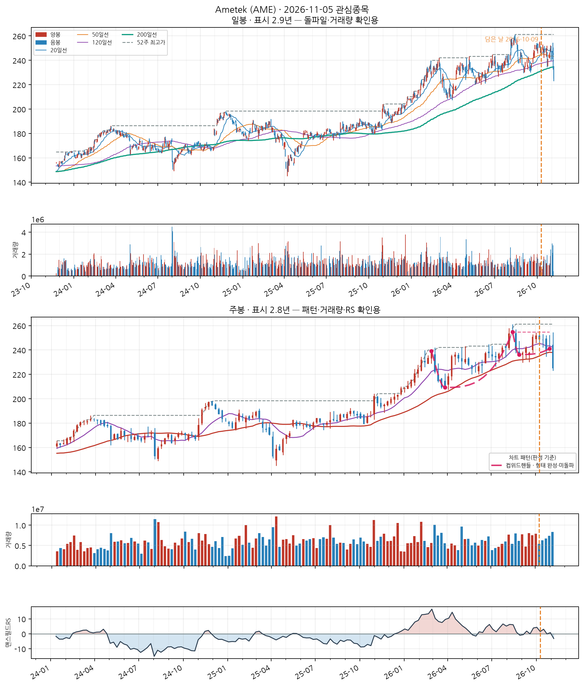
📐 컵위드핸들 · 형태 완성·미돌파
📐 차트 패턴 판정: 컵위드핸들 형태 완성·미돌파 확신 중간 판정 기준(PDF)
컵(24주·깊이 17.9%)+핸들 형태는 있으나 피벗 254.79를 아직 넘지 못했다.
가장 강한 반증 U자 모양: 바닥 형태(3주 중앙값 평활): 직선 V 템플릿 오차 0.174 vs 포물선 U 템플릿 오차 0.190 → 치우침 -0.016 (V=−0.167·U=+0.167, 기각 ≤-0.05·충족 ≥+0.05) · 바닥 중심 위치 15% — 바닥 중심이 중앙(25~75%)을 벗어남(비대칭)
경쟁 후보·더 단순한 설명 없음
측정표 (주봉 종가 기준, 판정일 2026-11-05 이후 데이터 미사용)
조건별 판정
- 충족 선행 추세 — 선행 상승 +29.4% ≥ +20%
- 충족 기간 — 컵 24주 (기준 7~65주)
- 충족 깊이 — 컵 깊이 17.9% (기준 12%~33%)
- 충족 림 대칭 — 좌우 림 차이 6.1% ≤ 12%
- 부분충족 U자 모양 — 바닥 형태(3주 중앙값 평활): 직선 V 템플릿 오차 0.174 vs 포물선 U 템플릿 오차 0.190 → 치우침 -0.016 (V=−0.167·U=+0.167, 기각 ≤-0.05·충족 ≥+0.05) · 바닥 중심 위치 15% — 바닥 중심이 중앙(25~75%)을 벗어남(비대칭)
- 충족 베이스 거래량 수축 — 컵 구간 평균 = 직전 24주 평균의 0.93배
- 충족 핸들 — 핸들 2주·깊이 7.3% (기준 ≤15%, 컵 깊이의 절반 이하)
- 부분충족 핸들 거래량 수축 — 핸들 평균 = 컵 구간 평균의 1.08배
- 충족 최근성 — 마지막 구조 피벗(2026-08-28)이 9주 전
- 미충족 피벗 돌파 — 종가가 아직 확인선 위로 안 올라옴(-5.4%)
- 판정불가 돌파 거래량 — 돌파 전
추가로 필요한 데이터 장중 고저 기준 깊이(여기 수치는 주봉 종가 기준) · 이번 주 완결 주봉(2026-11-06 라벨) — 미완결이라 판정에서 제외
패턴만으로 매수 추천이나 목표 달성 확률을 만들지 않습니다. 수치 기준은 잠정치이며 라벨 데이터로 검증되지 않았습니다.
CC — 분기 실적 성장 양호
2026 분기(10-Q) · 순이익 +14.8% · EPS +15.6% · 매출 +17.3%
SEC EDGAR(10-Q/10-K) 기준 · 분기 단독 전년동기 대비 · 직전 분기보다 성장률이 높아짐(가속)
AA — 연간 실적 성장 양호
2025 연간(10-K) · 순이익 +7.6% · EPS +7.9% · 매출 +6.6%
SEC EDGAR(10-Q/10-K) 기준 · 연간 전년동기 대비 · 최근 3년 연간 EPS 연속 증가
NN — 신고가·모멘텀 데이터 없음
신고가 데이터 없음
SS — 수급(거래량) 데이터 없음
거래량 데이터 없음
LL — 주도주(상대강도) 보통
RS 등급 31/99 (126거래일 ≈ 6개월 기준 · 유니버스 956종목 중 백분위) · 지수대비 +4.1%p
상위 시가총액 유니버스 기준 — KRX 전체 대비 백분위 아님 · 오닐의 RS Rating은 52주 기준이지만 여기는 126거래일로, 같은 리포트의 6개월 모멘텀과 기간을 맞춘 값이다(원전과 다름)
II — 기관·외국인 수급 데이터 없음
미국 종목은 기관 수급 데이터 소스 없음 (SEC Form 13F는 최대 45일 지연되는 분기 스냅샷이라 부적합)
MM — 시장방향 미흡
IXIC 지수가 60일선 아래
**오닐의 M(분산일·추종일 계수)이 아니라 지수의 이동평균 상회 여부**를 쓴 대용값이다 · 실제 매매 필터로는 미적용(표시 전용) — 종목 선별보다 지수 자체 타이밍이 더 효율적이라는 자체 검증 결과 있음 (reports/vs_kospi.md)
합성고무 및 플라스틱 물질 제조업
업종 참고: RS 평균 65/99(업종 중 상위 24%) · 오늘 신호 1건 · 업종 평균이 코스피 대비 +11.9%p(126일), 종목별 편차 ±4%p
🧪 자체 섹터 분류(실험적, 참고용): 기초 화학물질 제조업 (GS·SK케미칼 등 11종목)
섹터 내 RS 순위: 2/11위 (RS 73/99)
섹터 1~3위: GS(86), SK케미칼(73), 국도화학(62)
※ 자체 상관관계 계산(최근 1년) — 검증 시 기준업종 11개 중 8개 정확. 주 단위로 구성종목이 일부 바뀔 수 있음(주간 일치도 실측 0.53)
종가 44,200
Launch Pad 스캐너 · 신호 2026-10-01 50,800원→2026-11-05 44,200원−6,600원 (−12.99%)
담은 스캐너: Launch Pad 스캐너담은 날짜: 2026-10-01담은 이유: 컵위드핸들, 매수 검토 중
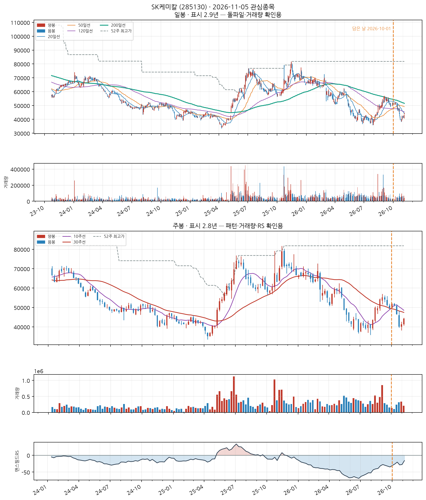
📐 차트 패턴 판정: 후보 없음 후보 없음 판정 기준(PDF)
세 패턴 모두 필수 조건을 채운 후보가 없다(가장 가까운 컵위드핸들 후보: 핸들: 핸들 저점 37,300가 컵 중간값 60,050 아래 — 핸들이 아니라 컵 재하락).
가장 강한 반증 컵위드핸들: 핸들: 핸들 저점 37,300가 컵 중간값 60,050 아래 — 핸들이 아니라 컵 재하락; 이중바닥: 두 저점 일치: 저점 차이 27.3% — 같은 지지대로 보기 어려움(10% 초과)
경쟁 후보·더 단순한 설명 더 단순한 설명: 최근 26주 하락 추세 지속(-30.5%) — 베이스 없음
추가로 필요한 데이터 장중 고저 기준 깊이(여기 수치는 주봉 종가 기준) · 이번 주 완결 주봉(2026-11-06 라벨) — 미완결이라 판정에서 제외
패턴만으로 매수 추천이나 목표 달성 확률을 만들지 않습니다. 수치 기준은 잠정치이며 라벨 데이터로 검증되지 않았습니다.
CC — 분기 실적 성장 우수
2026 반기보고서(누적) · 순이익 흑자전환(+nan억원→+68억원) · EPS 흑자전환(+nan원→+455원) · 매출 흑자전환(+nan억원→+7,451억원)
DART 공시 기준 · 분기 단독 전년동기 대비 · 직전 분기보다 성장률이 높아짐(가속)
AA — 연간 실적 성장 양호
2025 사업보고서(연간) · 순이익 흑자전환(-44억원→+273억원) · EPS +98.4% · 매출 +36.2%
DART 공시 기준 · 연간 전년동기 대비 · 최근 3년 연속 증가는 아님 — 오닐 A 기준 미충족으로 한 단계 낮춤 · 순이익은 연결 총계(비지배지분 포함), EPS는 지배주주 기준이라 둘의 증감 방향이 다를 수 있음
NN — 신고가·모멘텀 데이터 없음
신고가 데이터 없음
SS — 수급(거래량) 데이터 없음
거래량 데이터 없음
LL — 주도주(상대강도) 양호
RS 등급 73/99 (126거래일 ≈ 6개월 기준 · 유니버스 1000종목 중 백분위) · 지수대비 +17.1%p
상위 시가총액 유니버스 기준 — KRX 전체 대비 백분위 아님 · 오닐의 RS Rating은 52주 기준이지만 여기는 126거래일로, 같은 리포트의 6개월 모멘텀과 기간을 맞춘 값이다(원전과 다름)
II — 기관·외국인 수급 데이터 없음
데이터 없음 — 조회 실패 (KIS_APP_KEY/KIS_APP_SECRET 미설정 또는 API 오류)
MM — 시장방향 미흡
KOSPI 지수가 60일선 아래
**오닐의 M(분산일·추종일 계수)이 아니라 지수의 이동평균 상회 여부**를 쓴 대용값이다 · 실제 매매 필터로는 미적용(표시 전용) — 종목 선별보다 지수 자체 타이밍이 더 효율적이라는 자체 검증 결과 있음 (reports/vs_kospi.md)
특수 목적용 기계 제조업
업종 참고: RS 평균 38/99(업종 중 상위 78%) · 오늘 신호 6건 · 업종 평균이 코스닥 대비 +9.5%p(126일), 종목별 편차 ±40%p
🧪 자체 섹터 분류(실험적, 참고용): 특수 목적용 기계 제조업 (피에스케이홀딩스·피에스케이 등 7종목)
섹터 내 RS 순위: 2/7위 (RS 71/99)
섹터 1~3위: 피에스케이홀딩스(92), 피에스케이(71), 테스(63)
※ 자체 상관관계 계산(최근 1년) — 검증 시 기준업종 11개 중 8개 정확. 주 단위로 구성종목이 일부 바뀔 수 있음(주간 일치도 실측 0.53)
종가 89,600
Launch Pad 스캐너 · 신호 2026-10-01 161,900원→2026-11-05 89,600원−72,300원 (−44.66%)
담은 스캐너: Launch Pad 스캐너담은 날짜: 2026-10-01담은 이유: 정배열 막 시작(신선도 높음)
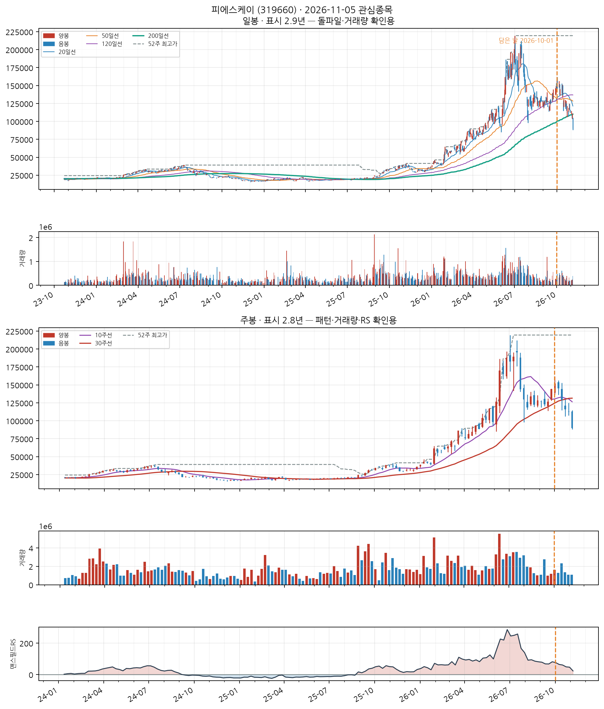
📐 차트 패턴: 약한 유사 — 이중바닥 형성 중 확신 낮음 판정 기준(PDF)
두 저점은 있으나 두 번째 저점(112,400) 부근에 머물러 W의 오른쪽 다리가 아직 없다.
가장 강한 반증 선행 추세: 선행 추세가 상승(+369.1%) — 상승 중 눌림일 수 있어 반전형 전제가 없다
경쟁 후보·더 단순한 설명 더 단순한 설명: 선행 하락이 없어 반전형이 아니라 상승 추세 중 눌림(조정)일 수 있다
측정표 (주봉 종가 기준, 판정일 2026-11-05 이후 데이터 미사용)
조건별 판정
- 미충족 선행 추세 — 선행 추세가 상승(+369.1%) — 상승 중 눌림일 수 있어 반전형 전제가 없다
- 충족 두 저점 일치 — 저점 차이 5.1% ≤ 6% · 두 번째 저점이 첫 저점을 언더컷(IBD 선호)
- 부분충족 중간 반등 — 중간 반등 35.2% — 30%를 넘어 W가 아니라 독립된 두 파동일 수 있음
- 충족 기간 — 베이스 15주 ≥ 7주
- 부분충족 깊이 — 베이스 깊이 42.5% — 40% 초과
- 충족 저점2 매도 약화 — 저점2 부근 거래량 = 저점1 부근의 0.53배
- 충족 최근성 — 마지막 구조 피벗(2026-10-30)이 0주 전
- 미충족 넥라인 돌파 — 종가가 아직 확인선 위로 안 올라옴(-26.1%)
- 판정불가 돌파 거래량 — 돌파 전
추가로 필요한 데이터 장중 고저 기준 깊이(여기 수치는 주봉 종가 기준) · 이번 주 완결 주봉(2026-11-06 라벨) — 미완결이라 판정에서 제외
패턴만으로 매수 추천이나 목표 달성 확률을 만들지 않습니다. 수치 기준은 잠정치이며 라벨 데이터로 검증되지 않았습니다.
CC — 분기 실적 성장 우수
2026 반기보고서(누적) · 순이익 흑자전환(+nan억원→+440억원) · EPS 흑자전환(+nan원→+1,516원) · 매출 흑자전환(+nan억원→+1,675억원)
DART 공시 기준 · 분기 단독 전년동기 대비 · 직전 분기보다 성장률이 높아짐(가속)
AA — 연간 실적 성장 미흡
2025 사업보고서(연간) · 순이익 -0.7% · EPS -0.7% · 매출 +14.9%
DART 공시 기준 · 연간 전년동기 대비 · 최근 3년 연속 증가는 아님 — 오닐 A 기준 미충족으로 한 단계 낮춤
NN — 신고가·모멘텀 데이터 없음
신고가 데이터 없음
SS — 수급(거래량) 데이터 없음
거래량 데이터 없음
LL — 주도주(상대강도) 양호
RS 등급 71/99 (126거래일 ≈ 6개월 기준 · 유니버스 1000종목 중 백분위) · 지수대비 +28.6%p
상위 시가총액 유니버스 기준 — KRX 전체 대비 백분위 아님 · 오닐의 RS Rating은 52주 기준이지만 여기는 126거래일로, 같은 리포트의 6개월 모멘텀과 기간을 맞춘 값이다(원전과 다름)
II — 기관·외국인 수급 데이터 없음
데이터 없음 — 조회 실패 (KIS_APP_KEY/KIS_APP_SECRET 미설정 또는 API 오류)
MM — 시장방향 미흡
KOSDAQ 지수가 20일선 아래
**오닐의 M(분산일·추종일 계수)이 아니라 지수의 이동평균 상회 여부**를 쓴 대용값이다 · 실제 매매 필터로는 미적용(표시 전용) — 종목 선별보다 지수 자체 타이밍이 더 효율적이라는 자체 검증 결과 있음 (reports/vs_kospi.md)
메타 플랫폼스(페이스북) (META)
NASDAQ
Communication Services
업종 참고: RS 평균 33/99(업종 중 상위 91%) · 오늘 신호 0건 · 업종 평균이 나스닥종합 대비 +0.8%p(126일), 종목별 편차 ±17%p
🧪 자체 섹터 분류(실험적, 참고용): Duolingo·쇼피파이 등 15종목 (업종 혼재)
섹터 내 RS 순위: 11/15위 (RS 36/99)
섹터 1~3위: Duolingo(94), 쇼피파이(94), Maplebear Inc.(93)
※ 자체 상관관계 계산(최근 1년) — 검증 시 기준업종 11개 중 8개 정확. 주 단위로 구성종목이 일부 바뀔 수 있음(주간 일치도 실측 0.53)
종가 $601.03
Launch Pad 스캐너 · 신호 2026-09-29 $738.79→2026-11-05 $601.03−$137.76 (−18.65%)
담은 스캐너: Launch Pad 스캐너담은 날짜: 2026-09-30담은 이유: 이중바닥, 진입 시점 대기
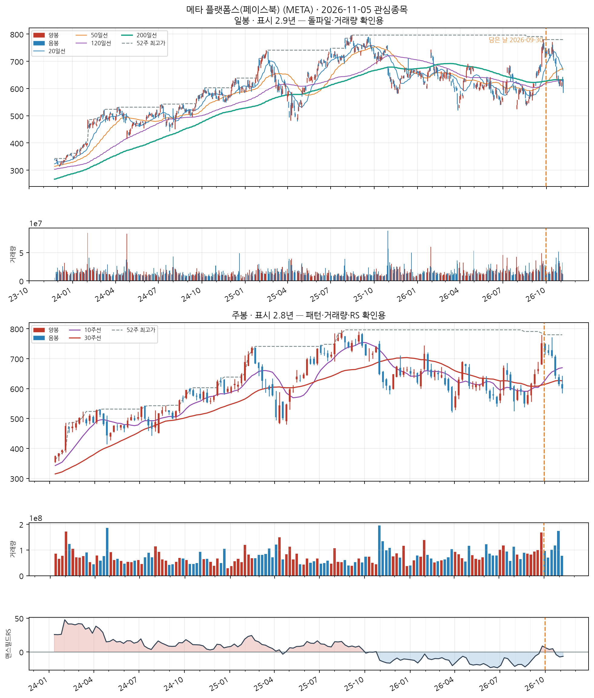
📐 차트 패턴 판정: 이중바닥 실패 확신 중간 판정 기준(PDF)
중간 고점 669.21를 넘었다가 종가가 다시 그 아래로 내려왔다(돌파 실패).
가장 강한 반증 돌파 유지: 돌파 뒤 종가가 확인선 아래로 되돌아옴(현재 -8.1%)
경쟁 후보·더 단순한 설명 없음
측정표 (주봉 종가 기준, 판정일 2026-11-05 이후 데이터 미사용)
조건별 판정
- 부분충족 선행 추세 — 선행 하락 -4.0% — -15%까지 안 내려옴
- 충족 두 저점 일치 — 저점 차이 0.1% ≤ 6% · 두 번째 저점이 첫 저점을 언더컷(IBD 선호)
- 충족 중간 반등 — 중간 반등 21.7% ≥ 8%
- 충족 기간 — 베이스 28주 ≥ 7주
- 충족 깊이 — 베이스 깊이 20.1% ≤ 40%
- 충족 저점2 매도 약화 — 저점2 부근 거래량 = 저점1 부근의 0.93배
- 충족 최근성 — 돌파 주(2026-09-25)가 5주 전
- 충족 넥라인 돌파 — 2026-09-25 주 종가 751.66 > 확인선 — 돌파 후 5주 경과
- 미충족 돌파 유지 — 돌파 뒤 종가가 확인선 아래로 되돌아옴(현재 -8.1%)
- 충족 돌파 거래량 — 돌파 주 거래량 = 직전 10주 평균의 1.96배
추가로 필요한 데이터 장중 고저 기준 깊이(여기 수치는 주봉 종가 기준) · 이번 주 완결 주봉(2026-11-06 라벨) — 미완결이라 판정에서 제외
패턴만으로 매수 추천이나 목표 달성 확률을 만들지 않습니다. 수치 기준은 잠정치이며 라벨 데이터로 검증되지 않았습니다.
CC — 분기 실적 성장 우수
2026 분기(10-Q) · 순이익 +264.0% · EPS +264.8% · 매출 +26.1%
SEC EDGAR(10-Q/10-K) 기준 · 분기 단독 전년동기 대비 · 직전 분기보다 성장률이 높아짐(가속)
AA — 연간 실적 성장 미흡
2025 연간(10-K) · 순이익 -3.1% · EPS -1.6% · 매출 +22.2%
SEC EDGAR(10-Q/10-K) 기준 · 연간 전년동기 대비 · 최근 3년 연속 증가는 아님 — 오닐 A 기준 미충족으로 한 단계 낮춤
NN — 신고가·모멘텀 데이터 없음
신고가 데이터 없음
SS — 수급(거래량) 데이터 없음
거래량 데이터 없음
LL — 주도주(상대강도) 보통
RS 등급 36/99 (126거래일 ≈ 6개월 기준 · 유니버스 956종목 중 백분위) · 지수대비 +6.5%p
상위 시가총액 유니버스 기준 — KRX 전체 대비 백분위 아님 · 오닐의 RS Rating은 52주 기준이지만 여기는 126거래일로, 같은 리포트의 6개월 모멘텀과 기간을 맞춘 값이다(원전과 다름)
II — 기관·외국인 수급 데이터 없음
미국 종목은 기관 수급 데이터 소스 없음 (SEC Form 13F는 최대 45일 지연되는 분기 스냅샷이라 부적합)
MM — 시장방향 미흡
IXIC 지수가 60일선 아래
**오닐의 M(분산일·추종일 계수)이 아니라 지수의 이동평균 상회 여부**를 쓴 대용값이다 · 실제 매매 필터로는 미적용(표시 전용) — 종목 선별보다 지수 자체 타이밍이 더 효율적이라는 자체 검증 결과 있음 (reports/vs_kospi.md)
Mettler Toledo (MTD)
NASDAQ
Health Care
업종 참고: RS 평균 73/99(업종 중 상위 1%) · 오늘 신호 0건 · 업종 평균이 나스닥종합 대비 +39.4%p(126일), 종목별 편차 ±41%p
🧪 자체 섹터 분류(실험적, 참고용): Health Care (Avantor·Charles River Laboratories 등 15종목)
섹터 내 RS 순위: 4/15위 (RS 96/99)
섹터 1~3위: Avantor(98), Charles River Laboratories(98), Bio-Rad Laboratories(96)
※ 자체 상관관계 계산(최근 1년) — 검증 시 기준업종 11개 중 8개 정확. 주 단위로 구성종목이 일부 바뀔 수 있음(주간 일치도 실측 0.53)
종가 $1,693.19
Launch Pad 스캐너 · 신호 2026-09-29 $1,537.33→2026-11-05 $1,693.19+$155.86 (+10.14%)
담은 스캐너: Launch Pad 스캐너담은 날짜: 2026-09-30담은 이유: 역헤드앤숄더, 진입 시점 대기
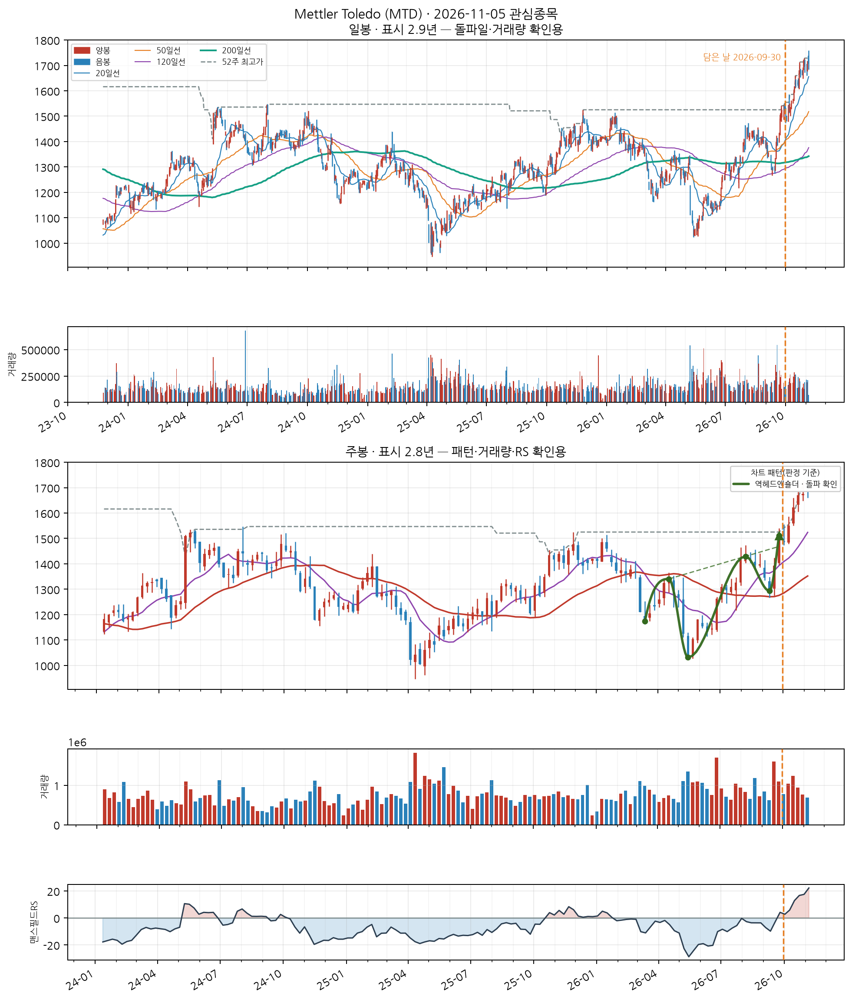
📐 역헤드앤숄더 · 돌파 확인
📐 차트 패턴 판정: 역헤드앤숄더 돌파 확인 확신 중간 판정 기준(PDF)
세 저점(머리 1,032) 뒤 넥라인(1,468, 2026-09-25)을 종가로 넘었다.
가장 강한 반증 선행 추세: 선행 하락 -6.8% — -15%까지 안 내려옴
경쟁 후보·더 단순한 설명 컵위드핸들(돌파 확인·확신 낮음)
측정표 (주봉 종가 기준, 판정일 2026-11-05 이후 데이터 미사용)
조건별 판정
- 부분충족 선행 추세 — 선행 하락 -6.8% — -15%까지 안 내려옴
- 충족 머리 깊이 — 양 어깨 대비 최소 12.1% ≥ 3.5%
- 충족 어깨 대칭 — 어깨 높이차 9.3% ≤ 15%
- 충족 기간 — 어깨 간 26주 ≥ 6주
- 충족 시간 대칭 — 머리 좌우 기간 비 1.89
- 충족 넥라인 기울기 — 주당 +0.4%
- 충족 오른쪽 어깨 매도 약화 — 오른쪽 어깨 부근 거래량 = 머리 부근의 0.87배
- 충족 최근성 — 돌파 주(2026-09-25)가 5주 전
- 충족 넥라인 돌파 — 2026-09-25 주 종가 1,512 > 확인선 — 돌파 후 5주 경과
- 부분충족 돌파 거래량 — 돌파 주 거래량 = 직전 10주 평균의 1.21배 (기준 1.4배)
추가로 필요한 데이터 장중 고저 기준 깊이(여기 수치는 주봉 종가 기준) · 이번 주 완결 주봉(2026-11-06 라벨) — 미완결이라 판정에서 제외
패턴만으로 매수 추천이나 목표 달성 확률을 만들지 않습니다. 수치 기준은 잠정치이며 라벨 데이터로 검증되지 않았습니다.
CC — 분기 실적 성장 양호
2024 분기(10-Q) · 순이익 +15.1% · EPS +18.3% · 매출 +4.5%
SEC EDGAR(10-Q/10-K) 기준 · 분기 단독 전년동기 대비 · 직전 분기보다 성장률이 높아짐(가속)
AA — 연간 실적 성장 양호
2025 연간(10-K) · 순이익 +0.7% · EPS +3.9% · 매출 +4.0%
SEC EDGAR(10-Q/10-K) 기준 · 연간 전년동기 대비 · 최근 3년 연간 EPS 연속 증가
NN — 신고가·모멘텀 데이터 없음
신고가 데이터 없음
SS — 수급(거래량) 데이터 없음
거래량 데이터 없음
LL — 주도주(상대강도) 우수
RS 등급 96/99 (126거래일 ≈ 6개월 기준 · 유니버스 956종목 중 백분위) · 지수대비 +64.7%p
상위 시가총액 유니버스 기준 — KRX 전체 대비 백분위 아님 · 오닐의 RS Rating은 52주 기준이지만 여기는 126거래일로, 같은 리포트의 6개월 모멘텀과 기간을 맞춘 값이다(원전과 다름)
II — 기관·외국인 수급 데이터 없음
미국 종목은 기관 수급 데이터 소스 없음 (SEC Form 13F는 최대 45일 지연되는 분기 스냅샷이라 부적합)
MM — 시장방향 미흡
IXIC 지수가 60일선 아래
**오닐의 M(분산일·추종일 계수)이 아니라 지수의 이동평균 상회 여부**를 쓴 대용값이다 · 실제 매매 필터로는 미적용(표시 전용) — 종목 선별보다 지수 자체 타이밍이 더 효율적이라는 자체 검증 결과 있음 (reports/vs_kospi.md)
Health Care
업종 참고: RS 평균 73/99(업종 중 상위 1%) · 오늘 신호 0건 · 업종 평균이 나스닥종합 대비 +39.4%p(126일), 종목별 편차 ±41%p
🧪 자체 섹터 분류(실험적, 참고용): Health Care (Avantor·Charles River Laboratories 등 15종목)
섹터 내 RS 순위: 14/15위 (RS 85/99)
섹터 1~3위: Avantor(98), Charles River Laboratories(98), Bio-Rad Laboratories(96)
※ 자체 상관관계 계산(최근 1년) — 검증 시 기준업종 11개 중 8개 정확. 주 단위로 구성종목이 일부 바뀔 수 있음(주간 일치도 실측 0.53)
종가 $59.03
Launch Pad 스캐너 · 신호 2026-09-25 $64.18→2026-11-05 $59.03−$5.15 (−8.03%)
담은 스캐너: Launch Pad 스캐너담은 날짜: 2026-09-26담은 이유: 컵위드핸들
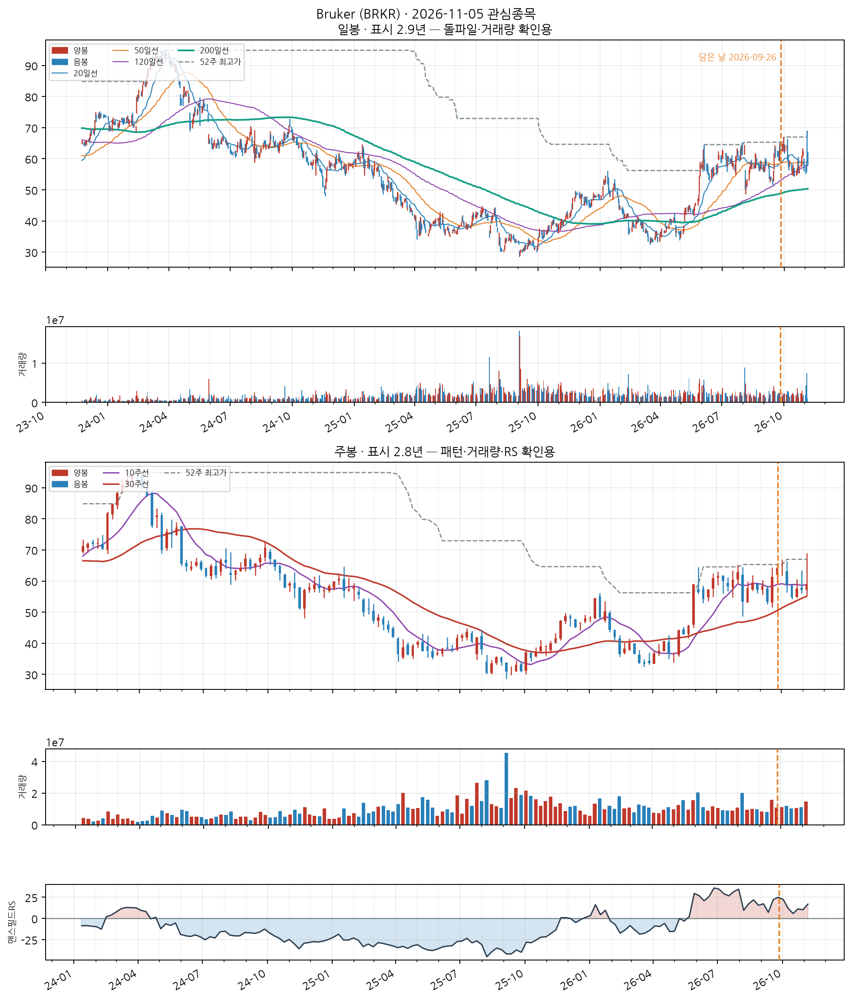
📐 차트 패턴: 약한 유사 — 이중바닥 형성 중 확신 낮음 판정 기준(PDF)
두 저점은 있으나 두 번째 저점(57.07) 부근에 머물러 W의 오른쪽 다리가 아직 없다.
가장 강한 반증 선행 추세: 선행 추세가 상승(+41.9%) — 상승 중 눌림일 수 있어 반전형 전제가 없다
경쟁 후보·더 단순한 설명 컵위드핸들(실패·확신 낮음) / 더 단순한 설명: 선행 하락이 없어 반전형이 아니라 상승 추세 중 눌림(조정)일 수 있다
측정표 (주봉 종가 기준, 판정일 2026-11-05 이후 데이터 미사용)
조건별 판정
- 미충족 선행 추세 — 선행 추세가 상승(+41.9%) — 상승 중 눌림일 수 있어 반전형 전제가 없다
- 부분충족 두 저점 일치 — 저점 차이 6.4% — 6% 초과
- 충족 중간 반등 — 중간 반등 20.2% ≥ 8%
- 충족 기간 — 베이스 13주 ≥ 7주
- 충족 깊이 — 베이스 깊이 15.0% ≤ 40%
- 충족 저점2 매도 약화 — 저점2 부근 거래량 = 저점1 부근의 0.81배
- 충족 최근성 — 마지막 구조 피벗(2026-10-30)이 0주 전
- 미충족 넥라인 돌파 — 종가가 아직 확인선 위로 안 올라옴(-11.1%)
- 판정불가 돌파 거래량 — 돌파 전
추가로 필요한 데이터 장중 고저 기준 깊이(여기 수치는 주봉 종가 기준) · 이번 주 완결 주봉(2026-11-06 라벨) — 미완결이라 판정에서 제외
패턴만으로 매수 추천이나 목표 달성 확률을 만들지 않습니다. 수치 기준은 잠정치이며 라벨 데이터로 검증되지 않았습니다.
CC — 분기 실적 성장 미흡
2026 분기(10-Q) · 순이익 적자확대($-60M→$-112M) · EPS 적자확대($-0.4→$-0.8) · 매출 +1.6%
SEC EDGAR(10-Q/10-K) 기준 · 분기 단독 전년동기 대비 · 직전 분기보다 성장률이 높아짐(가속)
AA — 연간 실적 성장 미흡
2025 연간(10-K) · 순이익 적자전환($+113M→$-8.6M) · EPS 적자전환($+0.8→$-0.1) · 매출 +2.1%
SEC EDGAR(10-Q/10-K) 기준 · 연간 전년동기 대비 · 최근 3년 연속 증가는 아님 — 오닐 A 기준 미충족으로 한 단계 낮춤
NN — 신고가·모멘텀 데이터 없음
신고가 데이터 없음
SS — 수급(거래량) 데이터 없음
거래량 데이터 없음
LL — 주도주(상대강도) 우수
RS 등급 85/99 (126거래일 ≈ 6개월 기준 · 유니버스 956종목 중 백분위) · 지수대비 +38.8%p
상위 시가총액 유니버스 기준 — KRX 전체 대비 백분위 아님 · 오닐의 RS Rating은 52주 기준이지만 여기는 126거래일로, 같은 리포트의 6개월 모멘텀과 기간을 맞춘 값이다(원전과 다름)
II — 기관·외국인 수급 데이터 없음
미국 종목은 기관 수급 데이터 소스 없음 (SEC Form 13F는 최대 45일 지연되는 분기 스냅샷이라 부적합)
MM — 시장방향 미흡
IXIC 지수가 60일선 아래
**오닐의 M(분산일·추종일 계수)이 아니라 지수의 이동평균 상회 여부**를 쓴 대용값이다 · 실제 매매 필터로는 미적용(표시 전용) — 종목 선별보다 지수 자체 타이밍이 더 효율적이라는 자체 검증 결과 있음 (reports/vs_kospi.md)
Chord Energy (CHRD)
NASDAQ
Energy
업종 참고: RS 평균 43/99(업종 중 상위 64%) · 오늘 신호 0건 · 업종 평균이 나스닥종합 대비 +11.6%p(126일), 종목별 편차 ±22%p
🧪 자체 섹터 분류(실험적, 참고용): Energy (PBF Energy·매러선 페트롤리엄 등 23종목)
섹터 내 RS 순위: 17/23위 (RS 35/99)
섹터 1~3위: PBF Energy(97), 매러선 페트롤리엄(96), Phillips 66(93)
※ 자체 상관관계 계산(최근 1년) — 검증 시 기준업종 11개 중 8개 정확. 주 단위로 구성종목이 일부 바뀔 수 있음(주간 일치도 실측 0.53)
종가 $141.02
Launch Pad 스캐너 · 신호 2026-09-11 $152.01→2026-11-05 $141.02−$10.99 (−7.23%)
담은 스캐너: Launch Pad 스캐너담은 날짜: 2026-09-13담은 이유: 진입 시점 대기
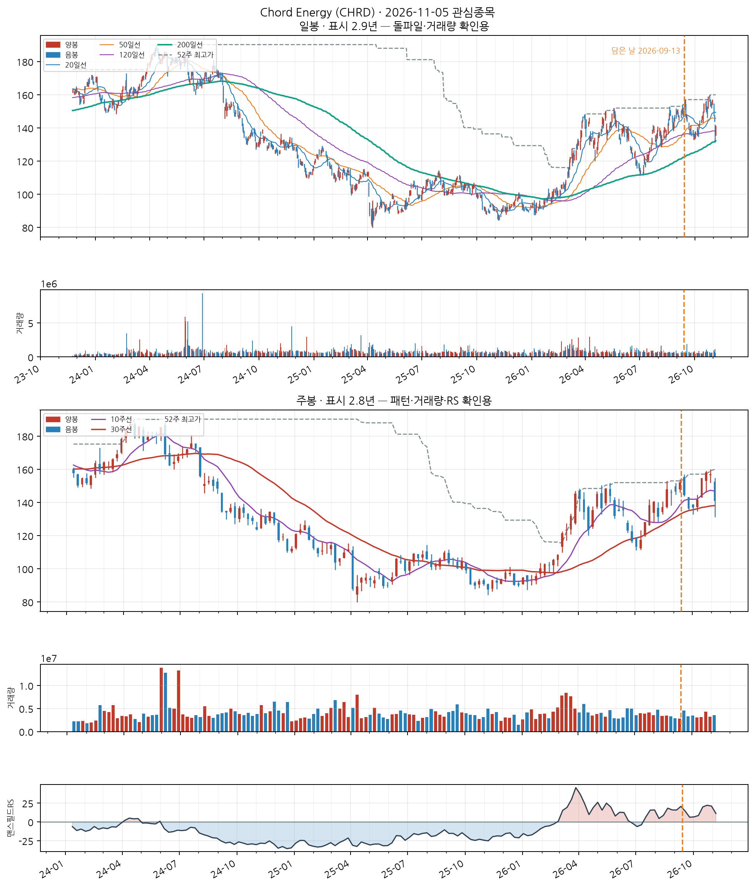
📐 차트 패턴: 약한 유사 — 역헤드앤숄더 돌파 확인 확신 낮음 판정 기준(PDF)
세 저점(머리 113.32) 뒤 넥라인(153.07, 2026-10-16)을 종가로 넘었다.
가장 강한 반증 선행 추세: 선행 추세가 상승(+37.7%) — 상승 중 눌림일 수 있어 반전형 전제가 없다
경쟁 후보·더 단순한 설명 이중바닥(돌파 확인·확신 낮음) / 더 단순한 설명: 선행 하락이 없어 반전형이 아니라 상승 추세 중 눌림(조정)일 수 있다
측정표 (주봉 종가 기준, 판정일 2026-11-05 이후 데이터 미사용)
조건별 판정
- 미충족 선행 추세 — 선행 추세가 상승(+37.7%) — 상승 중 눌림일 수 있어 반전형 전제가 없다
- 충족 머리 깊이 — 양 어깨 대비 최소 8.3% ≥ 3.5%
- 충족 어깨 대칭 — 어깨 높이차 9.3% ≤ 15%
- 충족 기간 — 어깨 간 23주 ≥ 6주
- 충족 시간 대칭 — 머리 좌우 기간 비 1.09
- 충족 넥라인 기울기 — 주당 +0.1%
- 충족 오른쪽 어깨 매도 약화 — 오른쪽 어깨 부근 거래량 = 머리 부근의 0.90배
- 충족 최근성 — 돌파 주(2026-10-16)가 2주 전
- 충족 넥라인 돌파 — 2026-10-16 주 종가 154.56 > 확인선 — 돌파 후 2주 경과
- 미충족 돌파 거래량 — 돌파 주 거래량 = 직전 10주 평균의 0.90배 (기준 1.4배)
추가로 필요한 데이터 장중 고저 기준 깊이(여기 수치는 주봉 종가 기준) · 이번 주 완결 주봉(2026-11-06 라벨) — 미완결이라 판정에서 제외
패턴만으로 매수 추천이나 목표 달성 확률을 만들지 않습니다. 수치 기준은 잠정치이며 라벨 데이터로 검증되지 않았습니다.
CC — 분기 실적 성장 양호
2026 분기(10-Q) · 순이익 +39.5% · EPS +45.6% · 매출 +30.0%
SEC EDGAR(10-Q/10-K) 기준 · 분기 단독 전년동기 대비 · 직전 분기보다 성장률이 낮아짐(감속) — 오닐 C 기준으로 한 단계 낮춤
AA — 연간 실적 성장 미흡
2025 연간(10-K) · 순이익 -94.8% · EPS -95.4% · 매출 -7.1%
SEC EDGAR(10-Q/10-K) 기준 · 연간 전년동기 대비 · 최근 3년 연속 증가는 아님 — 오닐 A 기준 미충족으로 한 단계 낮춤
NN — 신고가·모멘텀 데이터 없음
신고가 데이터 없음
SS — 수급(거래량) 데이터 없음
거래량 데이터 없음
LL — 주도주(상대강도) 보통
RS 등급 35/99 (126거래일 ≈ 6개월 기준 · 유니버스 956종목 중 백분위) · 지수대비 +6.1%p
상위 시가총액 유니버스 기준 — KRX 전체 대비 백분위 아님 · 오닐의 RS Rating은 52주 기준이지만 여기는 126거래일로, 같은 리포트의 6개월 모멘텀과 기간을 맞춘 값이다(원전과 다름)
II — 기관·외국인 수급 데이터 없음
미국 종목은 기관 수급 데이터 소스 없음 (SEC Form 13F는 최대 45일 지연되는 분기 스냅샷이라 부적합)
MM — 시장방향 미흡
IXIC 지수가 60일선 아래
**오닐의 M(분산일·추종일 계수)이 아니라 지수의 이동평균 상회 여부**를 쓴 대용값이다 · 실제 매매 필터로는 미적용(표시 전용) — 종목 선별보다 지수 자체 타이밍이 더 효율적이라는 자체 검증 결과 있음 (reports/vs_kospi.md)
nVent Electric plc (NVT)
NASDAQ
Industrials
업종 참고: RS 평균 43/99(업종 중 상위 54%) · 오늘 신호 0건 · 업종 평균이 나스닥종합 대비 +7.7%p(126일), 종목별 편차 ±24%p
🧪 자체 섹터 분류(실험적, 참고용): Industrials (Fluor·이턴 코퍼레이션 등 12종목)
섹터 내 RS 순위: 10/12위 (RS 3/99)
섹터 1~3위: Fluor(49), 이턴 코퍼레이션(18), GE버노바(10)
※ 자체 상관관계 계산(최근 1년) — 검증 시 기준업종 11개 중 8개 정확. 주 단위로 구성종목이 일부 바뀔 수 있음(주간 일치도 실측 0.53)
종가 $99.96
Launch Pad 스캐너 · 신호 2026-08-27 $155.55→2026-11-05 $99.96−$55.59 (−35.73%)
담은 스캐너: Launch Pad 스캐너담은 날짜: 2026-09-10담은 이유: 거래량 동반 상승
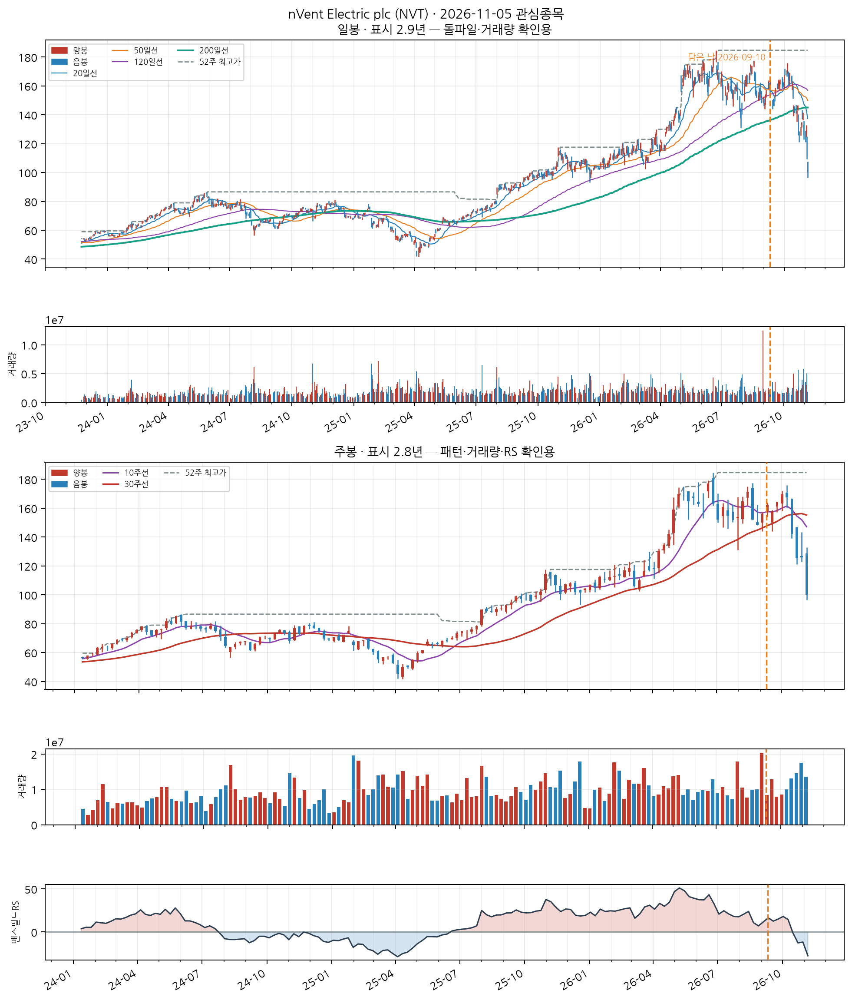
📐 차트 패턴: 약한 유사 — 이중바닥 실패 확신 낮음 판정 기준(PDF)
두 번째 저점 뒤 종가가 두 저점 아래(148.48 −3%)로 내려와 무효화됐다.
가장 강한 반증 선행 추세: 선행 추세가 상승(+74.3%) — 상승 중 눌림일 수 있어 반전형 전제가 없다
경쟁 후보·더 단순한 설명 더 단순한 설명: 선행 하락이 없어 반전형이 아니라 상승 추세 중 눌림(조정)일 수 있다
측정표 (주봉 종가 기준, 판정일 2026-11-05 이후 데이터 미사용)
조건별 판정
- 미충족 선행 추세 — 선행 추세가 상승(+74.3%) — 상승 중 눌림일 수 있어 반전형 전제가 없다
- 충족 두 저점 일치 — 저점 차이 2.2% ≤ 6% · 두 번째 저점이 첫 저점을 언더컷(IBD 선호)
- 충족 중간 반등 — 중간 반등 15.4% ≥ 8%
- 충족 기간 — 베이스 19주 ≥ 7주
- 충족 깊이 — 베이스 깊이 16.1% ≤ 40%
- 부분충족 저점2 매도 약화 — 저점2 부근 거래량 = 저점1 부근의 1.20배
- 충족 최근성 — 마지막 구조 피벗(2026-08-28)이 9주 전
- 미충족 넥라인 돌파 — 종가가 아직 확인선 위로 안 올라옴(-26.5%)
- 판정불가 돌파 거래량 — 돌파 전
추가로 필요한 데이터 장중 고저 기준 깊이(여기 수치는 주봉 종가 기준) · 이번 주 완결 주봉(2026-11-06 라벨) — 미완결이라 판정에서 제외
패턴만으로 매수 추천이나 목표 달성 확률을 만들지 않습니다. 수치 기준은 잠정치이며 라벨 데이터로 검증되지 않았습니다.
CC — 분기 실적 성장 양호
2026 분기(10-Q) · 순이익 +67.0% · EPS +66.2% · 매출 +43.7%
SEC EDGAR(10-Q/10-K) 기준 · 분기 단독 전년동기 대비 · 직전 분기보다 성장률이 낮아짐(감속) — 오닐 C 기준으로 한 단계 낮춤
AA — 연간 실적 성장 양호
2025 연간(10-K) · 순이익 +114.0% · EPS +118.8% · 매출 +29.5%
SEC EDGAR(10-Q/10-K) 기준 · 연간 전년동기 대비 · 최근 3년 연속 증가는 아님 — 오닐 A 기준 미충족으로 한 단계 낮춤
NN — 신고가·모멘텀 데이터 없음
신고가 데이터 없음
SS — 수급(거래량) 데이터 없음
거래량 데이터 없음
LL — 주도주(상대강도) 미흡
RS 등급 3/99 (126거래일 ≈ 6개월 기준 · 유니버스 956종목 중 백분위) · 지수대비 -34.7%p
상위 시가총액 유니버스 기준 — KRX 전체 대비 백분위 아님 · 오닐의 RS Rating은 52주 기준이지만 여기는 126거래일로, 같은 리포트의 6개월 모멘텀과 기간을 맞춘 값이다(원전과 다름)
II — 기관·외국인 수급 데이터 없음
미국 종목은 기관 수급 데이터 소스 없음 (SEC Form 13F는 최대 45일 지연되는 분기 스냅샷이라 부적합)
MM — 시장방향 미흡
IXIC 지수가 60일선 아래
**오닐의 M(분산일·추종일 계수)이 아니라 지수의 이동평균 상회 여부**를 쓴 대용값이다 · 실제 매매 필터로는 미적용(표시 전용) — 종목 선별보다 지수 자체 타이밍이 더 효율적이라는 자체 검증 결과 있음 (reports/vs_kospi.md)
소프트웨어 개발 및 공급업
업종 참고: RS 평균 57/99(업종 중 상위 45%) · 오늘 신호 3건 · 업종 평균이 코스닥 대비 +26.9%p(126일), 종목별 편차 ±37%p
🧪 자체 섹터 분류(실험적, 참고용): 소프트웨어 개발 및 공급업 (카카오게임즈·컴투스 등 14종목)
섹터 내 RS 순위: 2/14위 (RS 92/99)
섹터 1~3위: 카카오게임즈(93), 컴투스(92), 웹젠(89)
※ 자체 상관관계 계산(최근 1년) — 검증 시 기준업종 11개 중 8개 정확. 주 단위로 구성종목이 일부 바뀔 수 있음(주간 일치도 실측 0.53)
종가 33,700
Launch Pad 스캐너 · 신호 2026-09-10 34,850원→2026-11-05 33,700원−1,150원 (−3.30%)
담은 스캐너: Launch Pad 스캐너담은 날짜: 2026-09-10담은 이유: 거래량 동반 상승
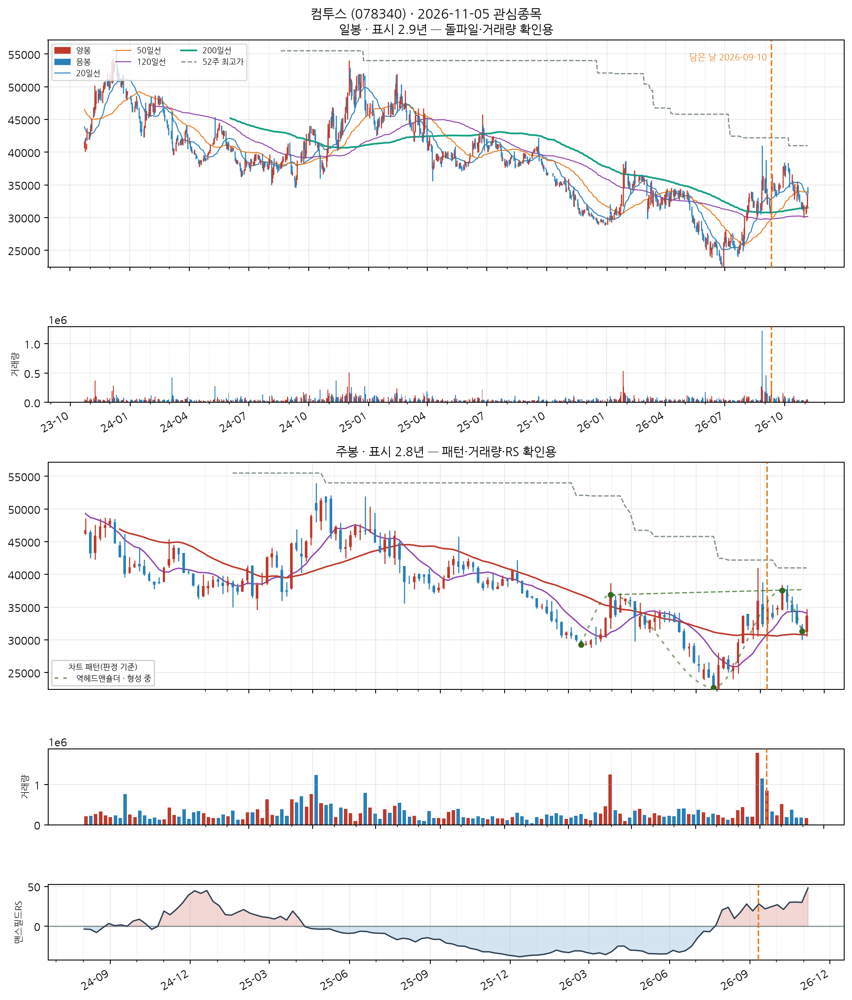
📐 역헤드앤숄더 · 형성 중
📐 차트 패턴 판정: 역헤드앤숄더 형성 중 확신 중간 판정 기준(PDF)
오른쪽 어깨(31,350) 부근에 머물러 있어 어깨가 완성됐다고 보기 이르다.
가장 강한 반증 뚜렷한 반증 없음 — 단, 패턴 판정이 이후 수익을 보장하지는 않는다
경쟁 후보·더 단순한 설명 없음
측정표 (주봉 종가 기준, 판정일 2026-11-05 이후 데이터 미사용)
조건별 판정
- 충족 선행 추세 — 선행 하락 -30.8% ≤ -15%
- 충족 머리 깊이 — 양 어깨 대비 최소 22.5% ≥ 3.5%
- 충족 어깨 대칭 — 어깨 높이차 6.5% ≤ 15%
- 충족 기간 — 어깨 간 45주 ≥ 6주
- 충족 시간 대칭 — 머리 좌우 기간 비 0.67
- 충족 넥라인 기울기 — 주당 +0.1%
- 충족 오른쪽 어깨 매도 약화 — 오른쪽 어깨 부근 거래량 = 머리 부근의 0.77배
- 충족 최근성 — 마지막 구조 피벗(2026-10-30)이 0주 전
- 미충족 넥라인 돌파 — 종가가 아직 확인선 위로 안 올라옴(-16.8%)
- 판정불가 돌파 거래량 — 돌파 전
추가로 필요한 데이터 장중 고저 기준 깊이(여기 수치는 주봉 종가 기준) · 이번 주 완결 주봉(2026-11-06 라벨) — 미완결이라 판정에서 제외
패턴만으로 매수 추천이나 목표 달성 확률을 만들지 않습니다. 수치 기준은 잠정치이며 라벨 데이터로 검증되지 않았습니다.
CC — 분기 실적 성장 미흡
2026 반기보고서(누적) · 순이익 적자확대(+nan억원→-35억원) · EPS 흑자전환(+nan원→+214원) · 매출 흑자전환(+nan억원→+1,570억원)
DART 공시 기준 · 분기 단독 전년동기 대비 · 직전 분기보다 성장률이 높아짐(가속) · 순이익은 연결 총계(비지배지분 포함), EPS는 지배주주 기준이라 둘의 증감 방향이 다를 수 있음
AA — 연간 실적 성장 보통
2025 사업보고서(연간) · 순이익 흑자전환(-1,520억원→+94억원) · EPS 흑자전환(-9,438원→+3,192원) · 매출 +0.4%
DART 공시 기준 · 연간 전년동기 대비 · 최근 3년 연속 증가는 아님 — 오닐 A 기준 미충족으로 한 단계 낮춤
NN — 신고가·모멘텀 데이터 없음
신고가 데이터 없음
SS — 수급(거래량) 데이터 없음
거래량 데이터 없음
LL — 주도주(상대강도) 우수
RS 등급 92/99 (126거래일 ≈ 6개월 기준 · 유니버스 1000종목 중 백분위) · 지수대비 +55.4%p
상위 시가총액 유니버스 기준 — KRX 전체 대비 백분위 아님 · 오닐의 RS Rating은 52주 기준이지만 여기는 126거래일로, 같은 리포트의 6개월 모멘텀과 기간을 맞춘 값이다(원전과 다름)
II — 기관·외국인 수급 데이터 없음
데이터 없음 — 조회 실패 (KIS_APP_KEY/KIS_APP_SECRET 미설정 또는 API 오류)
MM — 시장방향 미흡
KOSDAQ 지수가 20일선 아래
**오닐의 M(분산일·추종일 계수)이 아니라 지수의 이동평균 상회 여부**를 쓴 대용값이다 · 실제 매매 필터로는 미적용(표시 전용) — 종목 선별보다 지수 자체 타이밍이 더 효율적이라는 자체 검증 결과 있음 (reports/vs_kospi.md)
그외 기타 제품 제조업
업종 참고: RS 평균 데이터 부족 · 오늘 신호 0건
🧪 자체 섹터 분류(실험적, 참고용): 인피니트헬스케어·코메론 등 10종목 (업종 혼재)
섹터 내 RS 순위: 6/10위 (RS 83/99)
섹터 1~3위: 인피니트헬스케어(98), 코메론(95), 서호전기(86)
※ 자체 상관관계 계산(최근 1년) — 검증 시 기준업종 11개 중 8개 정확. 주 단위로 구성종목이 일부 바뀔 수 있음(주간 일치도 실측 0.53)
종가 26,350
Launch Pad 스캐너 · 신호 2026-08-31 29,650원→2026-11-05 26,350원−3,300원 (−11.13%)
담은 스캐너: Launch Pad 스캐너담은 날짜: 2026-08-31
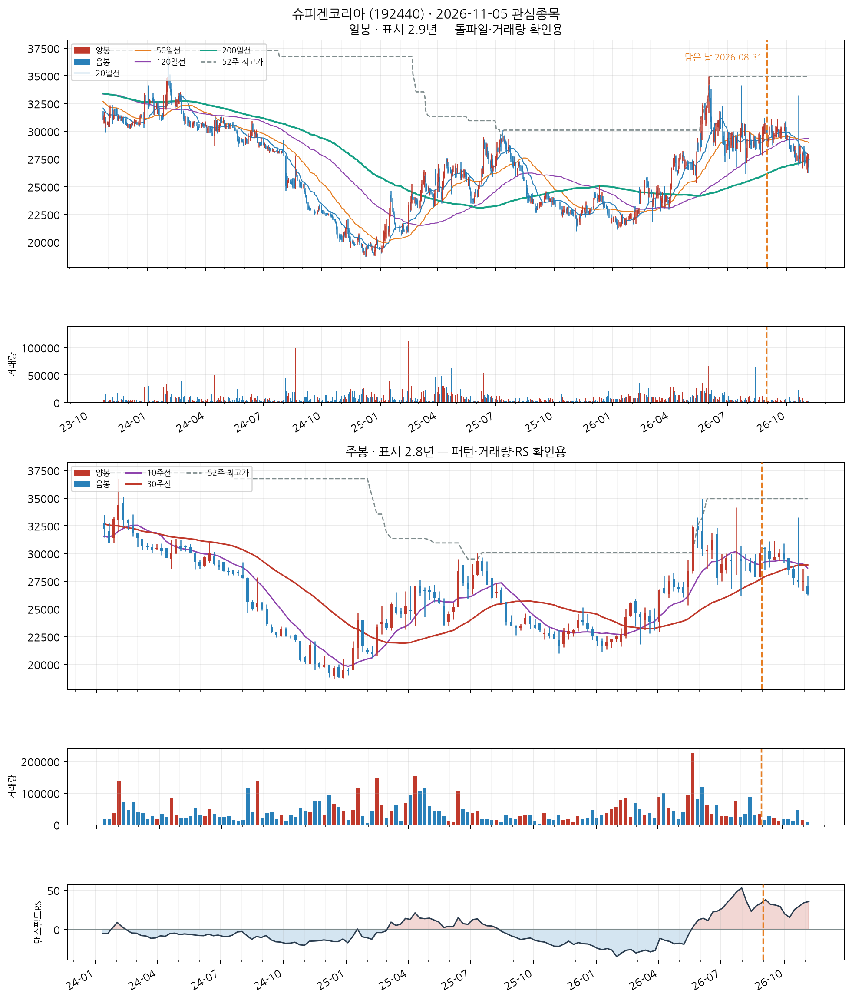
📐 차트 패턴 판정: 후보 없음 후보 없음 판정 기준(PDF)
세 패턴 모두 필수 조건을 채운 후보가 없다(가장 가까운 컵위드핸들 후보: 핸들: 핸들 저점 27,400가 컵 중간값 30,075 아래 — 핸들이 아니라 컵 재하락).
가장 강한 반증 컵위드핸들: 핸들: 핸들 저점 27,400가 컵 중간값 30,075 아래 — 핸들이 아니라 컵 재하락; 이중바닥: 두 저점 일치: 저점 차이 22.2% — 같은 지지대로 보기 어려움(10% 초과)
경쟁 후보·더 단순한 설명 더 단순한 설명: 최근 26주 박스권 횡보(등락폭 22.7%)
추가로 필요한 데이터 장중 고저 기준 깊이(여기 수치는 주봉 종가 기준) · 이번 주 완결 주봉(2026-11-06 라벨) — 미완결이라 판정에서 제외
패턴만으로 매수 추천이나 목표 달성 확률을 만들지 않습니다. 수치 기준은 잠정치이며 라벨 데이터로 검증되지 않았습니다.
CC — 분기 실적 성장 우수
2026 반기보고서(누적) · 순이익 흑자전환(+nan억원→+152억원) · EPS 흑자전환(+nan원→+2,625원) · 매출 흑자전환(+nan억원→+1,103억원)
DART 공시 기준 · 분기 단독 전년동기 대비 · 직전 분기보다 성장률이 높아짐(가속)
AA — 연간 실적 성장 미흡
2025 사업보고서(연간) · 순이익 적자축소(-11억원→-0.2억원) · EPS +3.3% · 매출 -0.3%
DART 공시 기준 · 연간 전년동기 대비 · 적자폭은 줄었으나 여전히 적자 — 오닐의 이익성장 기준은 미충족 · 최근 3년 연속 증가는 아님 — 오닐 A 기준 미충족으로 한 단계 낮춤 · 순이익은 연결 총계(비지배지분 포함), EPS는 지배주주 기준이라 둘의 증감 방향이 다를 수 있음
NN — 신고가·모멘텀 데이터 없음
신고가 데이터 없음
SS — 수급(거래량) 데이터 없음
거래량 데이터 없음
LL — 주도주(상대강도) 우수
RS 등급 83/99 (126거래일 ≈ 6개월 기준 · 유니버스 1000종목 중 백분위) · 지수대비 +40.8%p
상위 시가총액 유니버스 기준 — KRX 전체 대비 백분위 아님 · 오닐의 RS Rating은 52주 기준이지만 여기는 126거래일로, 같은 리포트의 6개월 모멘텀과 기간을 맞춘 값이다(원전과 다름)
II — 기관·외국인 수급 데이터 없음
데이터 없음 — 조회 실패 (KIS_APP_KEY/KIS_APP_SECRET 미설정 또는 API 오류)
MM — 시장방향 미흡
KOSDAQ 지수가 20일선 아래
**오닐의 M(분산일·추종일 계수)이 아니라 지수의 이동평균 상회 여부**를 쓴 대용값이다 · 실제 매매 필터로는 미적용(표시 전용) — 종목 선별보다 지수 자체 타이밍이 더 효율적이라는 자체 검증 결과 있음 (reports/vs_kospi.md)
Financials
업종 참고: RS 평균 57/99(업종 중 상위 9%) · 오늘 신호 0건 · 업종 평균이 나스닥종합 대비 +18.5%p(126일), 종목별 편차 ±15%p
🧪 자체 섹터 분류(실험적, 참고용): Financials (뱅크 오브 노바스코샤·미쓰비시 UFJ 파이낸셜 그룹(ADR) 등 11종목)
섹터 내 RS 순위: 4/11위 (RS 70/99)
섹터 1~3위: 뱅크 오브 노바스코샤(77), 미쓰비시 UFJ 파이낸셜 그룹(ADR)(73), BBVA(ADR)(70)
※ 자체 상관관계 계산(최근 1년) — 검증 시 기준업종 11개 중 8개 정확. 주 단위로 구성종목이 일부 바뀔 수 있음(주간 일치도 실측 0.53)
종가 $125.61
Launch Pad 스캐너 · 신호 2026-08-27 $121.09→2026-11-05 $125.61+$4.52 (+3.73%)
담은 스캐너: Launch Pad 스캐너담은 날짜: 2026-08-28
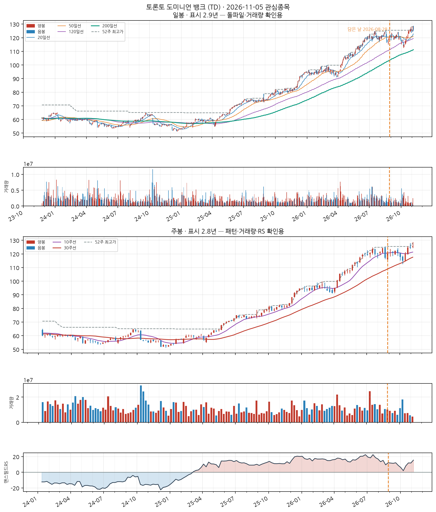
📐 차트 패턴 판정: 후보 없음 후보 없음 판정 기준(PDF)
세 패턴에 해당하는 베이스 구조가 최근 구간에 없다.
가장 강한 반증 피벗 구조 자체가 없다(뚜렷한 저점·고점 교대가 최근 26주 안에 없음).
경쟁 후보·더 단순한 설명 더 단순한 설명: 최근 26주 상승 추세 지속(+16.0%) — 베이스 없음
추가로 필요한 데이터 장중 고저 기준 깊이(여기 수치는 주봉 종가 기준) · 이번 주 완결 주봉(2026-11-06 라벨) — 미완결이라 판정에서 제외
패턴만으로 매수 추천이나 목표 달성 확률을 만들지 않습니다. 수치 기준은 잠정치이며 라벨 데이터로 검증되지 않았습니다.
CC — 분기 실적 성장 데이터 없음
데이터 없음 — SEC EDGAR 조회 실패 또는 XBRL 미제출
AA — 연간 실적 성장 데이터 없음
데이터 없음 — SEC EDGAR 조회 실패 또는 10-K 미제출
NN — 신고가·모멘텀 데이터 없음
신고가 데이터 없음
SS — 수급(거래량) 데이터 없음
거래량 데이터 없음
LL — 주도주(상대강도) 양호
RS 등급 70/99 (126거래일 ≈ 6개월 기준 · 유니버스 956종목 중 백분위) · 지수대비 +23.4%p
상위 시가총액 유니버스 기준 — KRX 전체 대비 백분위 아님 · 오닐의 RS Rating은 52주 기준이지만 여기는 126거래일로, 같은 리포트의 6개월 모멘텀과 기간을 맞춘 값이다(원전과 다름)
II — 기관·외국인 수급 데이터 없음
미국 종목은 기관 수급 데이터 소스 없음 (SEC Form 13F는 최대 45일 지연되는 분기 스냅샷이라 부적합)
MM — 시장방향 미흡
IXIC 지수가 60일선 아래
**오닐의 M(분산일·추종일 계수)이 아니라 지수의 이동평균 상회 여부**를 쓴 대용값이다 · 실제 매매 필터로는 미적용(표시 전용) — 종목 선별보다 지수 자체 타이밍이 더 효율적이라는 자체 검증 결과 있음 (reports/vs_kospi.md)
기타 금융업
업종 참고: RS 평균 57/99(업종 중 상위 42%) · 오늘 신호 0건 · 업종 평균이 코스피 대비 +8.5%p(126일), 종목별 편차 ±26%p
🧪 자체 섹터 분류(실험적, 참고용): 기타 금융업 (현대해상·삼성화재 등 19종목)
섹터 내 RS 순위: 7/19위 (RS 88/99)
섹터 1~3위: 현대해상(97), 삼성화재(96), 메리츠금융지주(95)
※ 자체 상관관계 계산(최근 1년) — 검증 시 기준업종 11개 중 8개 정확. 주 단위로 구성종목이 일부 바뀔 수 있음(주간 일치도 실측 0.53)
종가 158,200
Launch Pad 스캐너 · 신호 2026-08-27 168,100원→2026-11-05 158,200원−9,900원 (−5.89%)
담은 스캐너: Launch Pad 스캐너담은 날짜: 2026-08-27
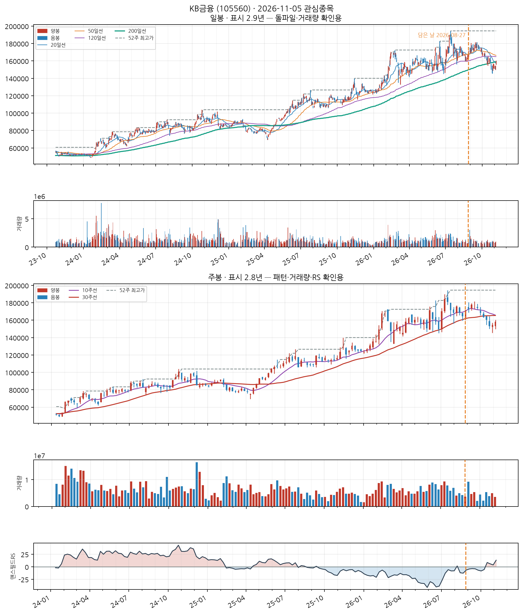
📐 차트 패턴 판정: 후보 없음 후보 없음 판정 기준(PDF)
세 패턴 모두 필수 조건을 채운 후보가 없다(가장 가까운 컵위드핸들 후보: 핸들: 핸들 저점 164,300가 컵 중간값 166,850 아래 — 핸들이 아니라 컵 재하락).
가장 강한 반증 컵위드핸들: 핸들: 핸들 저점 164,300가 컵 중간값 166,850 아래 — 핸들이 아니라 컵 재하락; 이중바닥: 최근성: 돌파가 16주 전(2026-07-10) — 기준 8주 이내, 이미 지난 베이스(확인선 대비 -9.9%)
경쟁 후보·더 단순한 설명 더 단순한 설명: 최근 26주 박스권 횡보(등락폭 23.5%)
추가로 필요한 데이터 장중 고저 기준 깊이(여기 수치는 주봉 종가 기준) · 이번 주 완결 주봉(2026-11-06 라벨) — 미완결이라 판정에서 제외
패턴만으로 매수 추천이나 목표 달성 확률을 만들지 않습니다. 수치 기준은 잠정치이며 라벨 데이터로 검증되지 않았습니다.
CC — 분기 실적 성장 우수
2026 반기보고서(누적) · 순이익 흑자전환(+nan억원→+20,105억원) · EPS 흑자전환(+nan원→+5,549원)
DART 공시 기준 · 분기 단독 전년동기 대비 · 직전 분기보다 성장률이 높아짐(가속)
AA — 연간 실적 성장 양호
2025 사업보고서(연간) · 순이익 +16.1% · EPS +19.6%
DART 공시 기준 · 연간 전년동기 대비 · 최근 3년 연간 EPS 연속 증가
NN — 신고가·모멘텀 데이터 없음
신고가 데이터 없음
SS — 수급(거래량) 데이터 없음
거래량 데이터 없음
LL — 주도주(상대강도) 우수
RS 등급 88/99 (126거래일 ≈ 6개월 기준 · 유니버스 1000종목 중 백분위) · 지수대비 +32.6%p
상위 시가총액 유니버스 기준 — KRX 전체 대비 백분위 아님 · 오닐의 RS Rating은 52주 기준이지만 여기는 126거래일로, 같은 리포트의 6개월 모멘텀과 기간을 맞춘 값이다(원전과 다름)
II — 기관·외국인 수급 데이터 없음
데이터 없음 — 조회 실패 (KIS_APP_KEY/KIS_APP_SECRET 미설정 또는 API 오류)
MM — 시장방향 미흡
KOSPI 지수가 60일선 아래
**오닐의 M(분산일·추종일 계수)이 아니라 지수의 이동평균 상회 여부**를 쓴 대용값이다 · 실제 매매 필터로는 미적용(표시 전용) — 종목 선별보다 지수 자체 타이밍이 더 효율적이라는 자체 검증 결과 있음 (reports/vs_kospi.md)